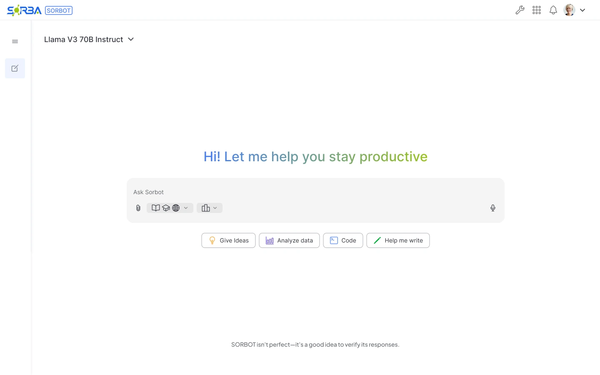
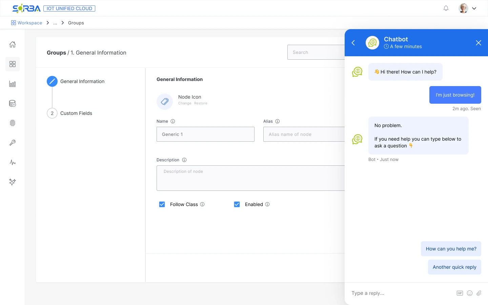
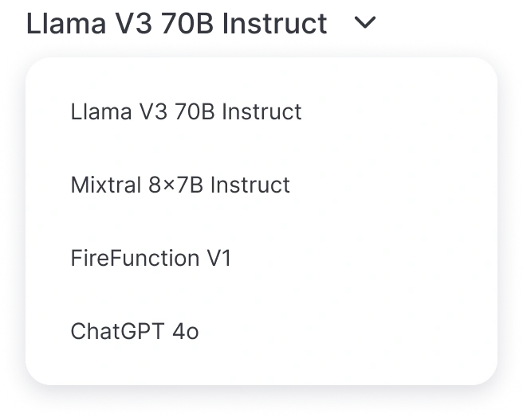
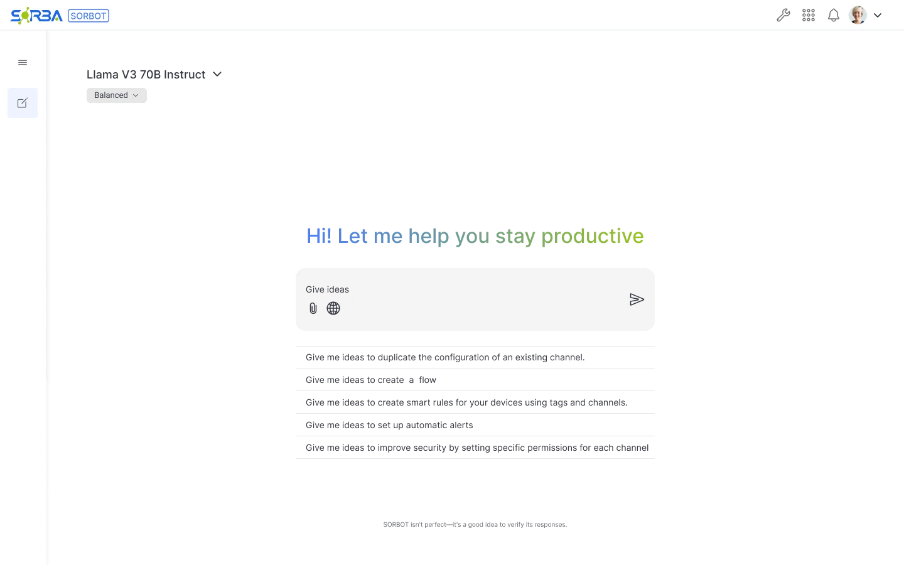
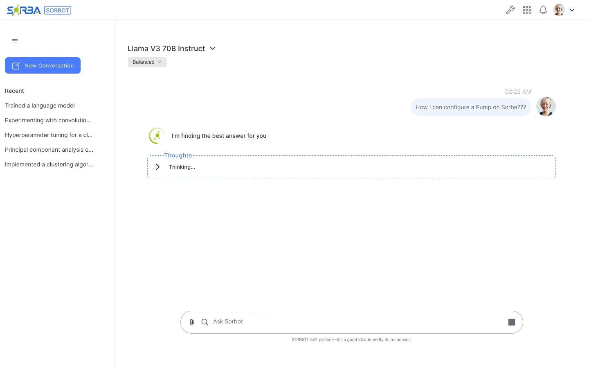
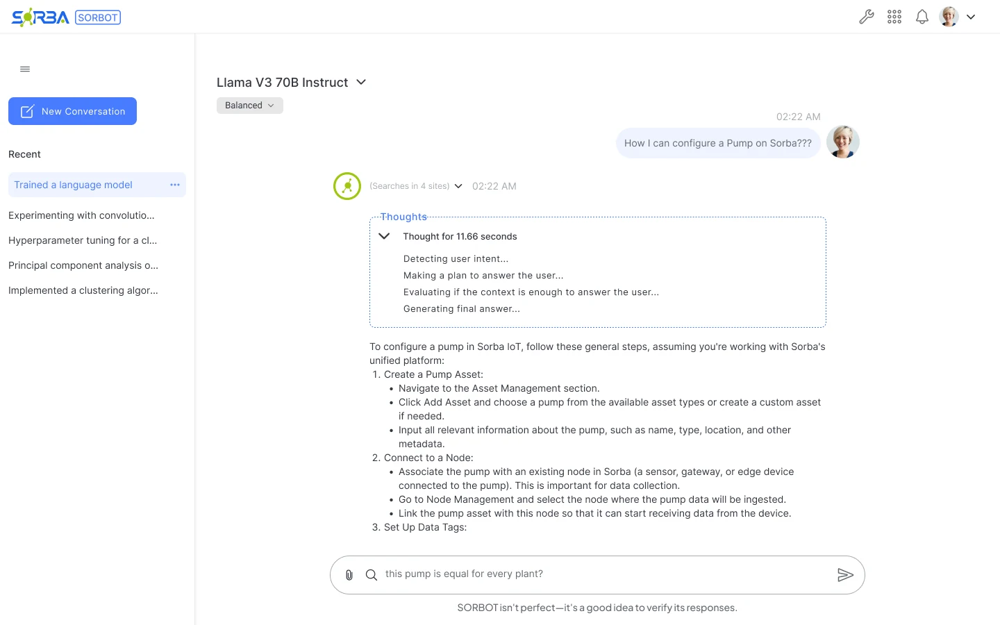
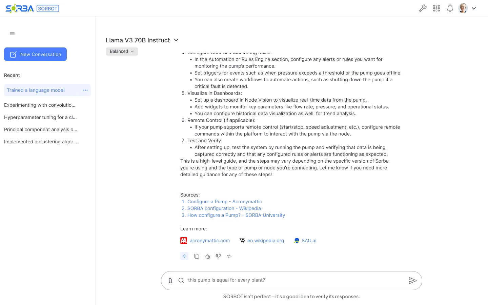
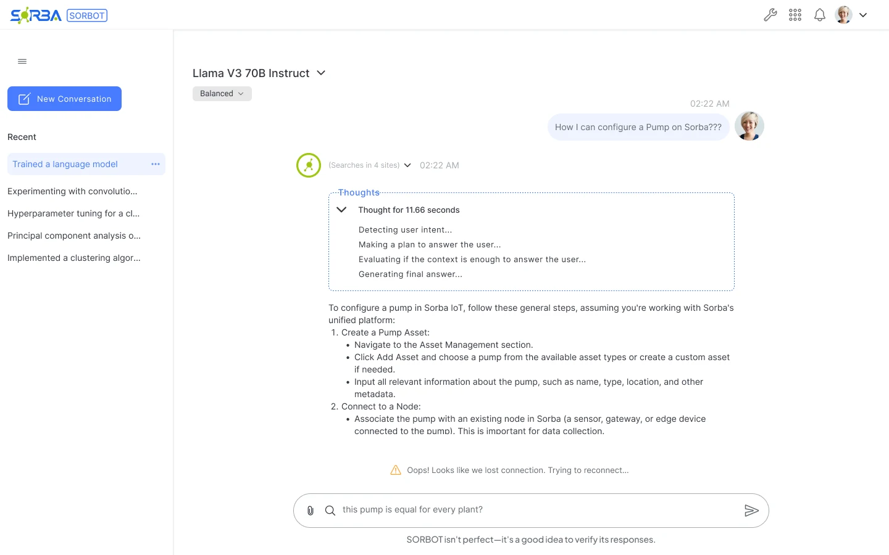
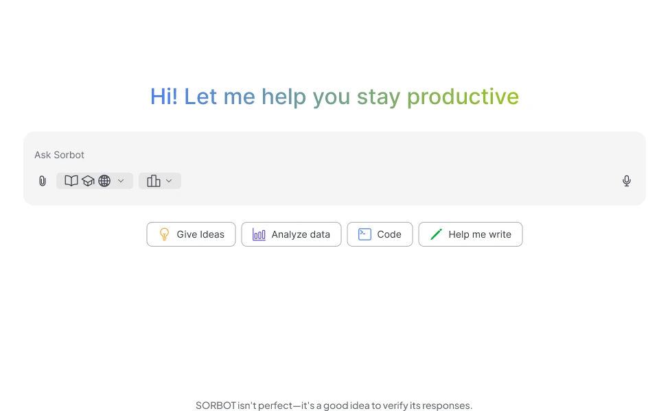
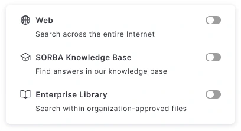

REVIEW 1
Show where answers come from
Raised
The reviewers asked where the information in an answer comes from.
Changed
Answers end with numbered sources and a Learn more row of linked sites with their icons.
Case study · Sorba.ai · Sorbot
I designed two ways to ask for help in IoT Unified: a dedicated assistant for broader questions and a panel beside node configuration.
The need
Guidance through a complex, data-rich workspace.
My design
A dedicated assistant and help within node configuration.
The outcome
In use at Sorba.ai. Two assistant surfaces designed in about two months; next, test with industrial users.

Context
IoT Unified brings together a large volume of data and many configurable nodes. The company wanted an assistant for questions about node setup and configuration. The design needed to offer help while leaving room for the task itself.
The project manager defined the requirements together with the heads of the development department.
I reviewed proposals with developers from unrelated projects. They were peer reviewers, not the industrial users who would configure nodes. Direct user access was unavailable, so I could not validate their needs or working habits firsthand.
This case covers the interface design: how people ask questions, choose a model and are prompted to verify responses.
Pattern research
I explored ChatGPT, Gemini, DeepSeek and other AI products as references, then iterated on what could fit IoT Unified. This was a review of interface patterns, separate from research with end users.
The design questions: how should someone begin a conversation, understand the available controls and choose a model? I adapted those patterns to questions about industrial data and configuration.
What I adapted
A familiar message composer, task-oriented starting points, a visible model selector and a reminder to verify responses.
Design decisions
I gave broader questions a dedicated workspace and put focused help beside node configuration. That second entry point keeps the form nearby, but it also competes for space.
Dedicated workspace
Room for a broader conversation, starter actions and model selection.
Embedded panel
The question sits beside the configuration form.
The panel takes space from the form, so fields can be hidden.

Retrospective comparison, not a record of tested alternatives. Whether both entry points are needed remains a validation question.
Decision 02 — Make the model choice visible
The design exposes more than one model. I kept the selector visible in the dedicated workspace and used an explicit list of names, so the choice is available without opening settings.
Visibility does not explain which model fits a task. I would test whether people can make that choice, or need descriptions and a recommended default.

Model options shown in the design. No performance ranking is implied.
Decision 03 — Give users a way to begin
The home offers starter actions, while this exploration suggests questions about channels, flows, smart rules, alerts and permissions. I used the language of IoT Unified to make the blank composer less abstract.
Each suggestion also sets an expectation about what Sorbot can answer. Those prompts still need to be checked against the assistant’s actual capabilities.

Decision 04 — Set expectations about AI responses
I included a reminder to verify Sorbot’s responses. An answer should be checked before it informs a configuration change. Next, I would test whether users can verify an answer before changing configuration.
In-product reminder
SORBOT isn’t perfect—it’s a good idea to verify its responses.
The interface also shows what Sorbot is doing: it lists its steps while it thinks, ends answers with their sources and says so when the connection drops.

Working
A status line and a collapsed Thoughts panel show that Sorbot is working on the question.

Thought process
The Thoughts panel lists the steps (detecting intent, planning, checking the context), then the answer follows.

Sources
The answer ends with numbered sources, linked sites and icon actions: listen, copy, like, dislike, regenerate.

Connection lost
If the connection drops, the interface says so and that it is trying to reconnect.
Iteration & peer review
The project took approximately two months. Company practice did not give me direct access to real users in the industrial sector, so I invited developers from other, unrelated projects to review the design as I iterated.
That gave me an outside perspective on the interface. It did not replace validation with people configuring nodes in their day-to-day work.
REVIEW 1
Raised
The reviewers asked where the information in an answer comes from.
Changed
Answers end with numbered sources and a Learn more row of linked sites with their icons.
REVIEW 2
Raised
The reviewers asked for icons instead of names to choose where Sorbot searches, and for other controls.
Changed
Each source first showed a short name next to its icon, which worked while there were few. As more were added, I kept only the icons, as ChatGPT and Claude do. The menu opens to each source’s name, a short description, its icon and a toggle.


Design outcome & next steps
The design work brings together a dedicated assistant, chat within a node flow, model selection and starting prompts.
Sorbot is in use at Sorba.ai, and anyone can try it through the Sorba trial, which is limited until a paid plan. I no longer have access to the product, so I have no usage data to share.
Configuration success, completion time and support needs are the outcomes to evaluate next with end users.
Proposed tasks. I would use representative configuration questions and check the answers independently.
Ask someone to resolve a configuration question. Watch which entry point they choose and whether the panel blocks fields they need.
Ask them to identify the active model and explain what they expect from another option. Look for uncertainty before adding more controls.
In a test environment, observe whether they can spot an incomplete answer, verify it and make a deliberate change. Record where the interface gives too little help.
Reflection
My next priority is to test how users choose a model and verify an answer during configuration.
I would bring industrial users in earlier and test one configuration task end to end before expanding the interface. That would help me decide which prompts, model controls and response states earn their place.